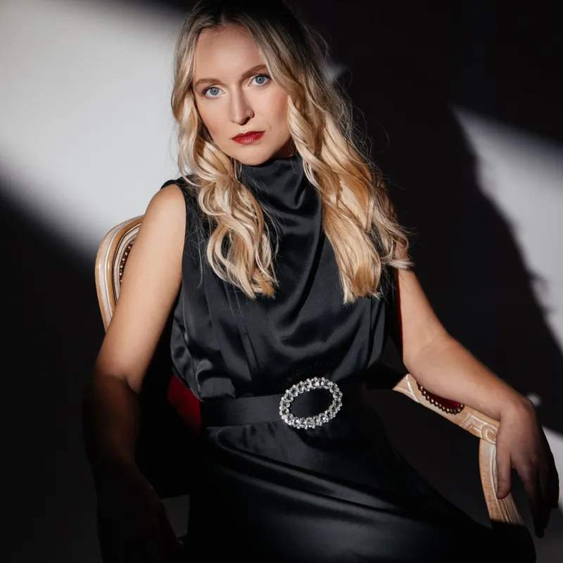

Anastasiya Bazhenova
Konsertpianist med intenst nærvær og nyansert klang. Debuterer på Etcetera Records våren 2026.
En fascinerende musikalsk tolkning som våger seg ut i hele det emosjonelle spekteret.Klassik Heute
Anastasiya Bazhenova er en konsertpianist med et sterkt personlig uttrykk, intenst nærvær og en nyansert klang.
Hennes kunstnerskap utfolder seg i spennet mellom kontroll og oppløsning, stillhet og eksplosjon – med en tydelig sans for kontraster, indre dramatikk og musikalsk fortelling.
Hun er født i Voronezj i Russland, og fikk sin tidlige utdanning ved talentprogrammet ved Central Music College i Voronezj, en ledende skole for særlig begavede unge musikere.
Hun fortsatte sine studier ved Voronezj kunstakademi hos professor Arkadij Dubovik, før hun flyttet til Norge og fullførte sin mastergrad ved Norges musikkhøgskole i Oslo under professor Jens Harald Bratlie.
Bazhenova opptrer som solist og kammermusiker i Europa og Nord-Amerika. Hun har blant annet gitt konserter i Carnegie Hall i New York, Ehrbar Saal i Wien og ved Palermo Classica-festivalen, og har samarbeidet med internasjonale orkestre.
Tidlig i karrieren mottok hun flere internasjonale priser, der juryene særlig fremhevet det personlige og emosjonelle i hennes tolkninger.
Hennes debutalbum From Mendelssohn to Madness på Etcetera Records, utgitt 1. april 2026, har allerede skapt internasjonal oppmerksomhet og ført til omtaler i ledende klassiske musikkmedier, blant annet Gramophone.
Albumet har også blitt presentert på radiokanaler som France Musique / Radio France, BRF1 og ORF Ö1, og ble valgt til Album of the Week av Opus 100,7 i Luxembourg.